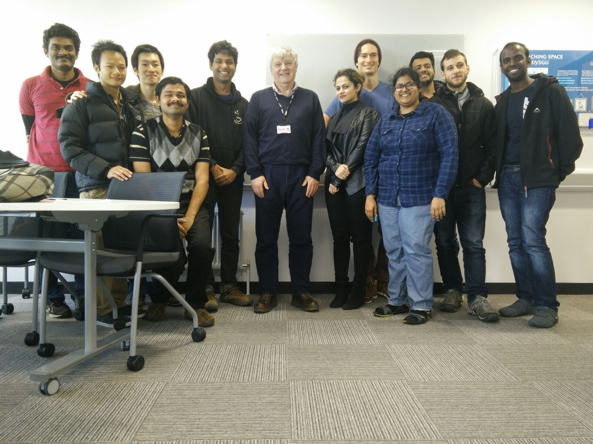

25 Sep. 2016
After finishing the first phase of Masters of Science in Computational Mechanics at Swansea University (in United Kingdom), I am continuing my studies at the Universitat Politècnica de Catalunya (UPC) with a Erasmus Mundus scholarship. I will be taking a few courses offered at the International Center for Numerical Methods in Engineering (CIMNE) and will be working on a research project under the supervision of Prof. Marino Arroyo.
The journey isn't as smooth as Swansea due a language barrier. However, I am trying to focus on positivity, i.e. interesting courses and course works and group discussions. I am very glad to be part of LaCáN – Mathematical and Computational Modeling. Marino introduced me to his research team and their backgrounds. His team gathers once a week to discuss research works taking place in the group. I will be focusing on modeling and simulation of cells and tissues. I am honored to be part of his team. I am very excited and looking forward to this new research chapter.
Universitat Politècnica de Catalunya, Barcelona
2 Sep. 2016
Today, I have presented the results on Computational Modeling of Hinged Aluminum Lighting Columns under the supervision of Dr. Fawzi Belblidia, Senior project officer, Advanced Sustainable Manufacturing Technologies (ASTUTE) 2020. Thanks to Fawzi and Dr. Dawn Morgan (research officer at ASTUTE 2020) for reviewing the project writing. I enjoyed working on the industrial project and focused discussions together with people from Aluminum Lighting Company (ALC).
With the ASTUTE 2020 team (Dr. Fawzi Belblidia, Dr. Claudio D'Onofrio, Salik Shaik, Dr. Dawn Morgan) at Swansea University
With this presentation, I conclude the first phase of M.Sc. at Swansea University. I would like to take a moment to thank a few people. Firstly, a big thanks to Dr. Ruben Sevilla, mentor from the day one at Swansea. I met him once in every week to update my status and progress during the stay at Swansea. He created a very welcoming environment. He taught Finite Element Computational Analysis in the first semester. Additionally, he took some extra time during mentor appointments to teach us a few pre-conditioning solver techniques (like LU-decomposition) which is not officially part of the curriculum.
M.Sc. team with Dr. Ruben Sevilla, Associate Professor, Swansea University
Thanks to Prof. Djordje Peric, teacher in both first and second semesters. He taught Computational Mechanics and Computational Plasticity in the first and second semester respectively. He is an excellent teacher with a very good phase to follow. He has great patience during instruction hours. He sits down with us during instruction hours and makes sure we understood the concepts very clearly. I am very sure that I will carry these contents with me throughout my life. Prof. Peric always showed us a few unique examples in plasticity (for example buckling of coca-cola can, shampoo bottle, bike frame etc.) and he let us work with a computational tool called Elfen used at Rockfield (a UK based software solutions company), Swansea.
With Prof. Djordje Peric, Professor, Swansea University
Thanks to Prof. Antonio J. Gil, teacher in second semester and he taught Nonlinear Continuum mechanics. He is very well skilled in breaking down highly complicated abstract content with a physical notion which makes it easier for beginners. His course projects were also quite challenging and interesting. His open questions made me spend additional time exploring a few things (like bubble shape formations as a minimization problem) out of curiosity.
M.Sc. team with Prof. Antonio J. Gil, Professor, Swansea University
Thanks to Prof. Michael Edwards, teacher in first semester. He taught Numerical Methods for Parital Differential Equations in the first semester. He has a great sense of humor while teaching mathematical concepts. There wasn't a single lecture without laughter from math jokes. I enjoyed his lecture so much that I ended up auditing his course on Modeling reservoirs in the second semester.
Part of M.Sc. team with Prof. Michael Edwards, Professor, Swansea University
Thanks to Prof. Kenneth Morgan, teacher in first semester and he taught Fluid mechanics. Initially it was hard to follow him. But as the days progressed, I could follow him quite easily. The lectures were intersting and the course work was quite challenging with a focus on evaluating drag and lift to a customized NACA airfoil.
M.Sc. team with Prof. Kenneth Morgan, Professor, Swansea University